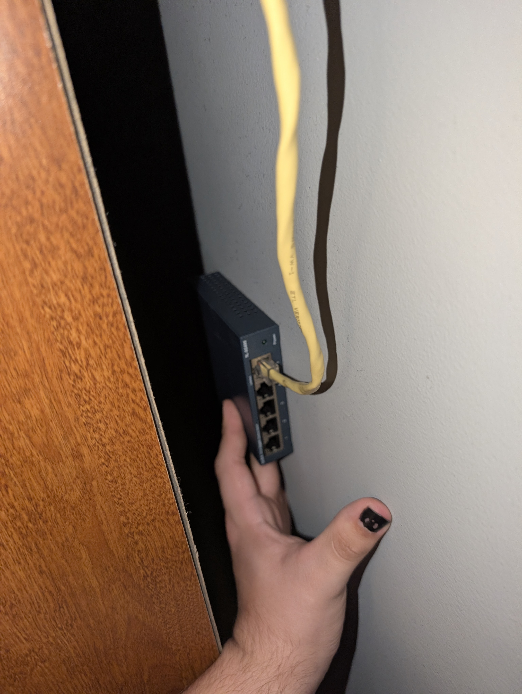
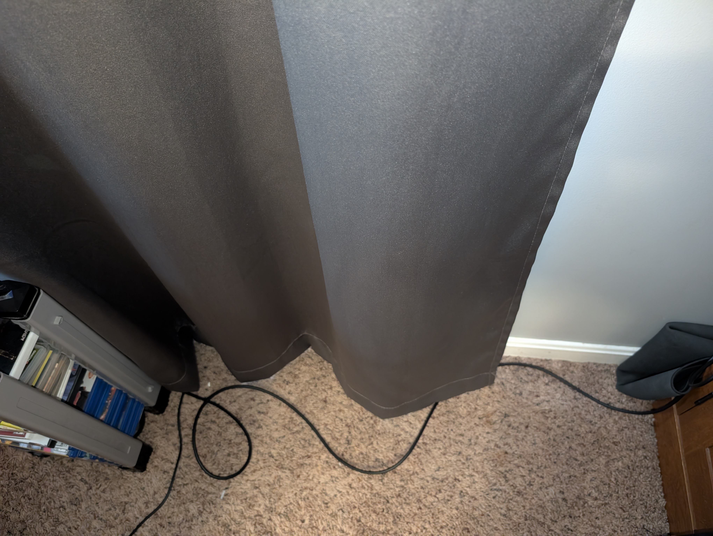
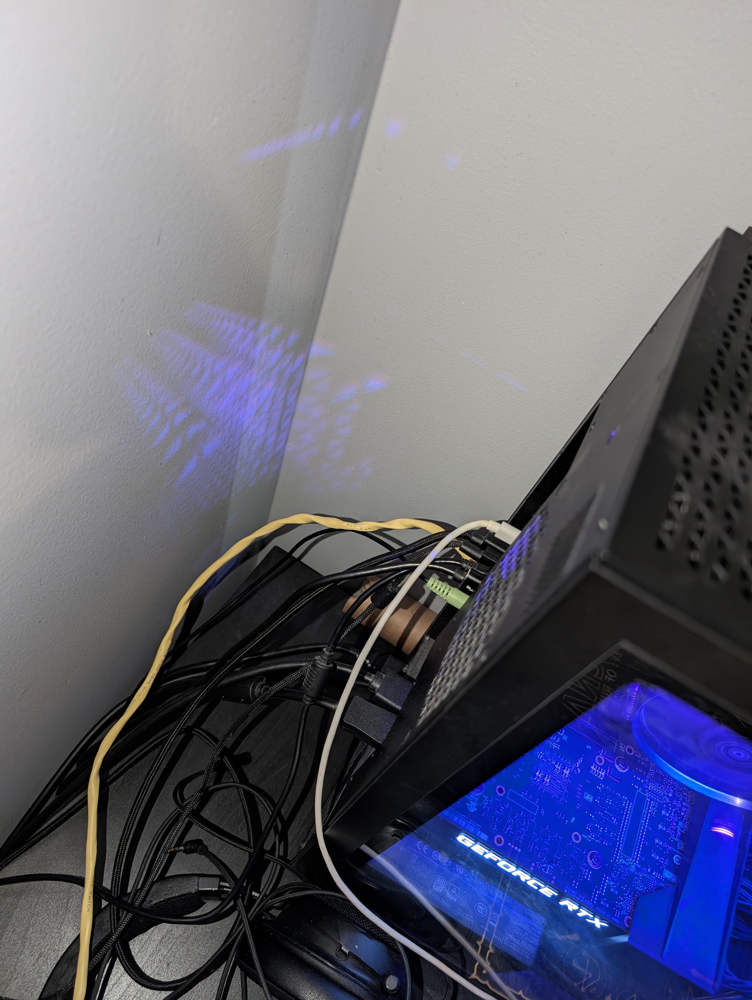

This tutorial walks through how to create a clean and expandable wired network setup using a switch. The goal is to connect multiple devices while keeping cable management organized.
Identify where your router is located and where each device will sit. Plan a cable path that avoids clutter and keeps cables hidden when possible.
Tip: Measure distance before running cable to avoid waste.

Route the ethernet cable along walls or floors using cable tracks. Secure cables using clips or zip ties to prevent movement.
Tip: Keep cables tight against edges for a cleaner look.

Plug the main ethernet line into the switch, then connect each device (PC, console, AV receiver) into the remaining ports.
Tip: Leave one open port for future expansion (like a NAS).

You now have a clean, wired setup that improves connection stability and allows for easy upgrades in the future.
This project helped me understand network hardware, cable management, and how to design setups that are both functional and scalable.